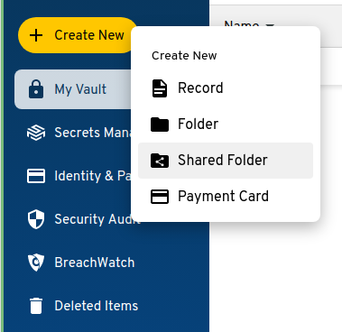
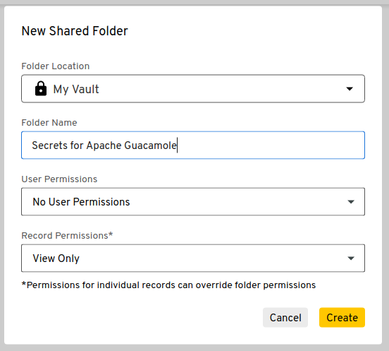
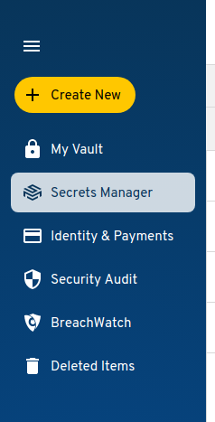
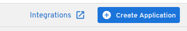
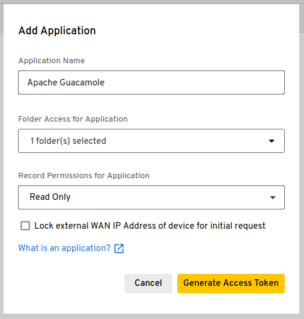
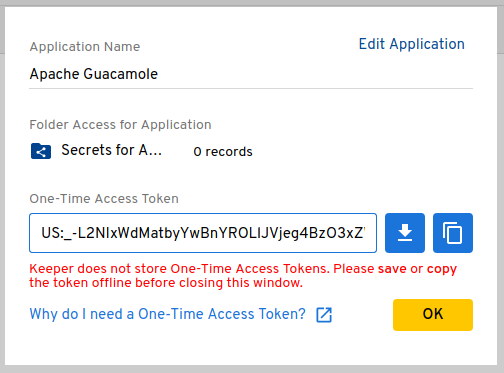

Retrieving secrets from a vault#
Guacamole supports reading secrets such as connection-specific passwords from a
key vault, automatically injecting those secrets into connection configurations
using parameter tokens or Guacamole configuration
properties via an additional, vault-specific configuration file analogous to
guacamole.properties. This support is intended with multiple vault providers
in mind and currently supports Keeper Secrets Manager (KSM).
Warning
You will need to restart the Guacamole web application in order to complete configuration. Doing this will disconnect all active users, so please:
Do this only at a time that you can tolerate service unavailability, such as a scheduled maintenance window.
Keep in mind that configuration errors may prevent Guacamole from starting back up.
Installing/Enabling the vault extension#
Guacamole is configured differently depending on whether Guacamole was installed natively or using the provided Docker images. The documentation here covers both methods.
Native installations of Guacamole under Apache Tomcat
or similar are configured by modifying the contents of GUACAMOLE_HOME
(Guacamole’s configuration directory), which is located at
/etc/guacamole by default and may need to be created first:
Download
guacamole-vault-1.6.0.tar.gzfrom the release page for Apache Guacamole 1.6.0 and extract it.Create the
GUACAMOLE_HOME/extensionsdirectory, if it does not already exist.Copy the
ksm/guacamole-vault-ksm-1.6.0.jarfile from the contents of the archive toGUACAMOLE_HOME/extensions/.Proceed with the configuring Guacamole for the newly installed extension as described below. The extension will be loaded after Guacamole has been restarted.
Note
Download and documentation links for all officially supported extensions for a particular version of Guacamole are always provided in the release notes for that version. The copy of the documentation you are reading now is from Apache Guacamole 1.6.0.
If you are using a different version of Guacamole, please locate that version within the release archives and consult the documentation for that release instead.
Docker installations of Guacamole include a bundled copy of Apache
Tomcat and are configured using environment
variables. The startup process of the Docker image automatically populates
GUACAMOLE_HOME (Guacamole’s configuration directory) based
on the values of these variables.
- If deploying Guacamole using Docker Compose:
You will need to add at least one relevant environment variable to the
environmentsection of yourguacamole/guacamolecontainer, such as theKSM_ENABLEDenvironment variable:KSM_ENABLED: "true"
- If instead deploying Guacamole by running
docker runmanually: The same environment variable(s) will need to be provided using the
-eoption. For example:$ docker run --name some-guacamole \ -e KSM_ENABLED="true" \ -d -p 8080:8080 guacamole/guacamole
If KSM_ENABLED is set to false, the extension will NOT be
installed, even if other related environment variables have been set. This can
be used to temporarily disable usage of an extension without needing to remove
all other related configuration.
You don’t strictly need to set KSM_ENABLED if other related
environment variables are provided, but the extension will be installed only if
at least one related environment variable is set.
Adding Guacamole to KSM#
Allowing an application like Guacamole to access secrets via KSM involves creating an application in KSM. A KSM application is simply a means of assigning permissions, narrowing exactly which secrets the application in question should be able to access.
Log into your vault via the Keeper Security website and create at least one shared folder to house any secrets that should be made available to Apache Guacamole. These folders will be used when registering Apache Guacamole with KSM and functions to define exactly which secrets the application may access. Secrets that are not within these shared folders will not be accessible by Guacamole.
The option for creating a shared folder is within a submenu that appears when you click on “Create New”:

No special options need to be selected for the shared folder except for providing a reasonable name for the folder:

Navigate to KSM by selecting the “Secrets Manager” tab in the navigation sidebar on the left side of the screen:

Click “Create Application” on the right ride of the toolbar near the top of the screen:

The dialog that appears will prompt you to provide a name for the application that will access the vault, as well as the shared folder(s) that this application will have access to. Enter a reasonable name for the application, such as “Apache Guacamole”, and select the shared folder(s) you created for Guacamole to access:

Guacamole only needs read-only access permissions to secrets, which should already be selected by default.
Warning
You should only check the “Lock external WAN IP” box if your Guacamole server has a static IP and you will be using the KSM CLI tool directly on that server. If you will be running the KSM CLI tool on a separate machine with a different public IP address, you must not check this box.
Once satisfied with the application name and parameters, click “Generate Token” to generate a one-time token:

This token can be used to generate a base64-encoded configuration blob as described in the following step, or it can be used directly to set a KSM config for a user or connection, as described in the following section.
Copy the provided one-time token using the KSM CLI tool to obtain the base64-encoded configuration that must be provided to Guacamole with the
ksm-configproperty. This token can only be used once, but the base64 configuration can be used indefinitely unless manually revoked within KSM:$ ./ksm init default US:_-L2NIxWdMatbyYwBnYROLlJVjeg4BzO3xZWoiDkh4U ewogICJjbGllbnRJZCI6ICJTR1ZzYkc4Z2RHaGxjbVVoSUZSb1pYTmxJSEJ5YjNCbGNuUnBaWE1n YUdGMlpTQmlaV1Z1SUcxaGJuVmhiR3g1SUhKbFpHRmpkR1ZrTGlCWGFIay9Qdz09IiwKICAicHJp dmF0ZUtleSI6ICJWRzhnWlc1emRYSmxJSFJvWVhRZ1lXTjBkV0ZzSUhObGJuTnBkR2wyWlNCMllX eDFaWE1nWVhKbElHNXZkQ0JsZUhCdmMyVmtJSFpwWVNCdmRYSWdiV0Z1ZFdGc0xpQlVhR1Y1SUcx aGVTQnViM1FnUVV4TUlHSmxJSE5sYm5OcGRHbDJaU0IyWVd4MVpYTXNJR0oxZENCaGRDQnNaV0Z6 ZENCdmJtVWdjMlZsYlhNZ2RHOGdZbVV1IiwKICAiYXBwS2V5IjogIlYyVnNZMjl0WlNFZ1JXNXFi M2tnUVhCaFkyaGxJRWQxWVdOaGJXOXNaU0U9IiwKICAiaG9zdG5hbWUiOiAia2VlcGVyc2VjdXJp dHkuY29tIiwKICAic2VydmVyUHVibGljS2V5SWQiOiAiMTAiCn0K $
Required configuration#
Guacamole requires only a single configuration property to configure secret
retrieval from KSM, ksm-config, which must be provided the base64
configuration value retrieved from KSM using the one-time token obtained when
Guacamole was registered with KSM as an application as described above.
All other properties are optional.
If deploying Guacamole natively, you will need to add a section to your
guacamole.properties that looks like the following:
ksm-config: ewogICJjbGllbnRJZCI6ICJTR1ZzYkc4Z2RHaGxjbVVoSUZSb1pYTmxJSEJ5YjNC...
The properties that must be set in all cases for any Guacamole installation using this extension are:
ksm-configThe base64-encoded configuration information generated for the application you created within KSM to represent Apache Guacamole. The easiest way to obtain this value is using the KSM CLI tool. as described above. This value is required.
Guacamole requires only a single configuration property to configure secret
retrieval from KSM, ksm-config, which must be provided the base64
configuration value retrieved from KSM using the one-time token obtained when
Guacamole was registered with KSM as an application as described above.
All other environment variables are optional.
If deploying Guacamole using Docker Compose, you will need to add a set of
environment variables to the environment section of your
guacamole/guacamole container that looks like the following:
KSM_CONFIG: 'ewogICJjbGllbnRJZCI6ICJTR1ZzYkc4Z2RHaGxjbVVoSUZSb1pYTmxJSEJ5YjNC...'
If instead deploying Guacamole by running docker run manually, these same
environment variables will need to be provided using the -e option. For
example:
$ docker run --name some-guacamole \
-e KSM_CONFIG="ewogICJjbGllbnRJZCI6ICJTR1ZzYkc4Z2RHaGxjbVVoSUZSb1pYTmxJSEJ5YjNC..." \
-d -p 8080:8080 guacamole/guacamole
The environment variables that must be set in all cases for any Docker-based Guacamole installation using this extension are:
KSM_CONFIGThe base64-encoded configuration information generated for the application you created within KSM to represent Apache Guacamole. The easiest way to obtain this value is using the KSM CLI tool. as described above. This value is required.
Additional vaults for users and connection groups#
In addition to the required, application-wide vault, Guacamole can be configured to pull secrets from separate vaults that are declared at the user or connection group level. The configuration information for these vaults can be set directly in the webapp, on the connection group edit page and on the user preferences page.
Hint
Unlike the application-wide vault (which must always be configured using a lengthy blob of base64-encoded data), a one-time token obtained from KSM can be used in these cases.
Because it is not necessarily desirable that users be able to provide their own secrets for use within connections, administrators must explicitly enable this functionality by:
Setting the relevant property to
true, as described below.Checking the “Allow user-provided KSM configuration” box on any connection that should be allowed to consume user-specific secrets.
Secrets from a user-specific vault will not be used unless both of the above conditions are true.
ksm-allow-user-configWhether or not users should be allowed to set their own KSM configuration, which will be used to pull secrets only when not already provided by the global or connection-group-level KSM configuration. A user-level KSM configuration will never be used if a matching secret is otherwise available.
In addition to the required, application-wide vault, Guacamole can be configured to pull secrets from separate vaults that are declared at the user or connection group level. The configuration information for these vaults can be set directly in the webapp, on the connection group edit page and on the user preferences page.
Hint
Unlike the application-wide vault (which must always be configured using a lengthy blob of base64-encoded data), a one-time token obtained from KSM can be used in these cases.
Because it is not necessarily desirable that users be able to provide their own secrets for use within connections, administrators must explicitly enable this functionality by:
Setting the relevant property to
true, as described below.Checking the “Allow user-provided KSM configuration” box on any connection that should be allowed to consume user-specific secrets.
Secrets from a user-specific vault will not be used unless both of the above conditions are true.
KSM_ALLOW_USER_CONFIGWhether or not users should be allowed to set their own KSM configuration, which will be used to pull secrets only when not already provided by the global or connection-group-level KSM configuration. A user-level KSM configuration will never be used if a matching secret is otherwise available.
Priorities of multiple vaults#
When multiple vaults apply to any connection attempt, secrets are pulled and applied in a specific order of priority that is intended to ensure the administrator always has ultimate control over the behavior of a connection:
Application-wide vault: Secrets are always pulled from the application-wide vault first (the vault provided with the
ksm-configproperty).Connection group vault: If a particular secret is not available within the application-wide vault, but the connection is within a connection group that has been configured with a KSM vault, the vault configured for that connection group is used to reattempt retrieving the secret.
User-specific vault: If a particular secret is not available within any other administator-controlled vault, the connection in question has been configured to allow user-specific vault use, and the current user has configured such a vault, that vault will be used to reattempt retrieving the secret.
By design, the application-wide vault always has the highest priority, and any administrator-controlled vault always has priority over user-controlled vaults.
Additional Configuration Options#
The following additional, optional properties may be set as desired to tailor the behavior of the KSM support:
ksm-allow-unverified-certWhether unverified server certificates should be accepted. If set to
true, the server certificate for connections to the KSM service will be accepted even if they cannot be verified. Unless you are a developer testing changes to the KSM vault support itself, it is unlikely that you need to set this property.ksm-api-call-intervalSpecify the minimum number of milliseconds between calls to the KSM API. The API allows a limited number of calls per month, and calls over the included amount generate additional cost. Setting this property allows you to limit Guacamole’s impact on that cost.
ksm-strip-windows-domainsWhether or not the Windows domain should be stripped off of the username when usernames are retrieved from the KSM vault and placed into its own secret. This is optional, and by default it is false - domains will not be stripped from the username.
The following additional, optional environment variables may be set as desired to tailor the behavior of the KSM support:
KSM_ALLOW_UNVERIFIED_CERTWhether unverified server certificates should be accepted. If set to
true, the server certificate for connections to the KSM service will be accepted even if they cannot be verified. Unless you are a developer testing changes to the KSM vault support itself, it is unlikely that you need to set this property.KSM_API_CALL_INTERVALSpecify the minimum number of milliseconds between calls to the KSM API. The API allows a limited number of calls per month, and calls over the included amount generate additional cost. Setting this property allows you to limit Guacamole’s impact on that cost.
KSM_STRIP_WINDOWS_DOMAINSWhether or not the Windows domain should be stripped off of the username when usernames are retrieved from the KSM vault and placed into its own secret. This is optional, and by default it is false - domains will not be stripped from the username.
Completing installation#
Guacamole will only reread its configuration and load newly-installed extensions during startup, so Tomcat will need to be restarted before these changes can take effect. Restart Tomcat and give the new functionality a try.
You do not need to restart guacd.
Hint
If Guacamole does not come back online after restarting Tomcat, check the logs. Configuration problems may prevent Guacamole from starting up, and any such errors will be recorded in Tomcat’s logs.
The environment variables that configure the behavior of Docker can only be set at the time the Docker container is created. To apply these configuration changes, you will need to recreate the container.
- If your Guacamole container was deployed using Docker Compose:
Simply making the desired changes to your
docker-compose.ymland runningdocker compose upis sufficient. Docker Compose will automatically recognize that the environment variables of the container have changed and recreate it.- If your Guacamole container was deployed manually (using
docker run): You wll need to manually use
docker rmto remove the old container and then manually recreate it withdocker runand the new environment variables.
Hint
If Guacamole does not come back online after recreating the container, check the Docker logs. Configuration problems may prevent Guacamole from starting up, and any such errors will be recorded in the Docker logs for the Guacamole container.
Retrieving connection secrets from a vault#
Secrets for connection parameters are provided using parameter
tokens that can be either automatically or manually defined.
Automatic tokens are defined dynamically by Guacamole when the connection is
used based on other configuration values within the
connection, such as the connection’s hostname or username. Manual tokens
are injected by Guacamole based on secrets that are statically mapped using an
additional configuration file.
Automatic injection of secrets based on connection parameters#
Parameter tokens containing the values of secrets within a record are
automatically injected for connections whose parameter values match specific
criteria, such as having a particular username or hostname. This happens
whenever a connection is used and is fully dynamic, affecting only the state of
the connection from the perspective of the user accessing it.
Important
There are limitations to the degree that secrets can be automatically applied based on connection parameters:
In all cases, only unique records are considered. If multiple records match the criteria that applies to a particular token in the context of a connection, the token will not be injected for that connection.
Automatic injection of secrets cannot currently be used with balancing connection groups, as the underlying connection that the balancing implementation will choose cannot be known before token values must be made available.
If automatic injection of secrets cannot work for your use case, consider using
manually-specified secrets via ksm-token-mapping.yml.
Parameter tokens injected from KSM records take the form
${KEEPER_CRITERIA_SECRET}, where CRITERIA determines how the
applicable record is located based on the connection’s parameters and SECRET
determines what value is retrieved from that record.
The following CRITERIA names are supported:
USERThe record whose “login” field contains a username that matches the value of the
usernameparameter of the connection. If the record has no “login” field, a “text” or “password” custom field will be used if the label of that field contains the word “username” (case-insensitive).SERVERThe record whose “login” field contains a hostname that matches the value of the
hostnameparameter of the connection. If the record has no “login” field, a “text” or “password” custom field will be used if the label of that field contains the word “hostname”, “address”, or “IP address” (case-insensitive, ignoring any spaces between “IP” and “address”).GATEWAYIdentical to
SERVER, except that the value of thegateway-hostnameparameter is used. This is only applicable to RDP connections.GATEWAY_USERIdentical to
USER, except that the value of thegateway-usernameparameter is used. This is only applicable to RDP connections.
The following SECRET types are supported:
USERNAMEThe username specified by the record’s “login” field. If the field is a custom field, the label must contain the word “username” (case-insensitive) and must be a “text” or “hidden” field.
DOMAINThe domain name of the record, either retrieved directly from the vault, or split out from the username if so configured in the vault. Typically this will apply when the username is associated with an Active Directory domain.
PASSWORDThe password specified by the record’s “password” or “hidden” field. If the field is a custom field, the label must contain the word “password” (case-insensitive).
KEYThe private key associated with the record. If the record has a dedicated key pair field, the private key from this field is used. If not, and the record has a single
.pemfile attached, the content of that attachment is used. Lacking any key pair field or attachment, any custom field that is a “password” or “hidden” field will be used as long as it contains the phrase “private key” in its label (case-insensitive, ignoring any space(s) between “private” and “key”).PASSPHRASEThe passphrase associated with the record’s private key, if the record type has dedicated fields for these. If the record has no dedicated passphrase field, a “password” or “hidden” custom field will be used as long as it has the word “passphrase” in its label (case-insensitive).
For example, the ${KEEPER_USER_PASSWORD} token would retrieve the password
for the user specified by the username parameter, and ${KEEPER_SERVER_KEY}
would retrieve the private key for the server specified by the hostname
parameter.
Manual definition of secrets#
Parameter tokens can be manually defined by placing a YAML file within
GUACAMOLE_HOME called ksm-token-mapping.yml. This file must contain a set
of name/value pairs where each name is the name of a token to define and each
value is a reference to a secret in KSM using “Keeper Notation”.
For example, the following ksm-token-mapping.yml defines two parameter
tokens, ${WINDOWS_ADMIN_PASSWORD} and ${LINUX_SERVER_KEY}, each pulling
their values from different parts of different records in KSM:
WINDOWS_ADMIN_PASSWORD: keeper://odei1zeejoL7Ceiv3eig0a/field/password
LINUX_SERVER_KEY: keeper://Chah0VuPh0ohyeuL4che1o/file/idrsa.pem
Token substitution of other parameter tokens like ${GUAC_USERNAME} is
performed on the reference to the secret to allow the reference to vary by
values that may be relevant to the connection. The values of substituted tokens
are URL-encoded before being placed into the reference in “Keeper Notation”. In
addition, the following tokens are available for use within the secret
reference:
${CONNECTION_GROUP_NAME}The human-readable name of the connection group being used. Secrets using this token are only available if a user is directly connecting to a balancing connection group, not manually connecting to a connection within a group.
${CONNECTION_GROUP_ID}The unique identifier of the connection group being used. Secrets using this token are only available if a user is directly connecting to a balancing connection group, not manually connecting to a connection within a group.
${CONNECTION_NAME}The human-readable name of the connection being used. Secrets using this token are only available if a user is directly connecting to a connection, not connecting via a balancing group.
${CONNECTION_ID}The unique identifier of the connection being used. Secrets using this token are only available if a user is directly connecting to a connection, not connecting via a balancing group.
${CONNECTION_HOSTNAME}The value of the
hostnameparameter of the connection being used. Secrets using this token are only available if a user is directly connecting to a connection, not connecting via a balancing group.${CONNECTION_USERNAME}The value of the
usernameparameter of the connection being used. Secrets using this token are only available if a user is directly connecting to a connection, not connecting via a balancing group.${USERNAME}The username of the current user, as stored with the user object representing that user in the system storing the relevant connection or connection group. This is not necessarily the same as
${GUAC_USERNAME}, which is the username provided by the user as part of their credentials when they authenticated.
For example, to automatically define a token called ${LINUX_SERVER_KEY} that
selects a private key from among several within the same record by searching
for a file named after the current user, the following YAML could be used:
LINUX_SERVER_KEY: keeper://Chah0VuPh0ohyeuL4che1o/file/${USERNAME}.pem
Retrieving configuration properties from a vault#
Secrets for Guacamole configuration properties are provided through an
additional file within GUACAMOLE_HOME called guacamole.properties.ksm.
This file is identical to guacamole.properties except that the values of properties
are references to KSM secrets in “Keeper Notation”.
Secrets can be used for any Guacamole configuration property that isn’t
required to configure the KSM support.
For example, the following guacamole.properties.ksm defines both the
mysql-username and mysql-password properties using values from a single
record in KSM that contains a username/password pair:
mysql-username: keeper://iel4yeic5ahxae7Eereec7/field/login
mysql-password: keeper://iel4yeic5ahxae7Eereec7/field/password